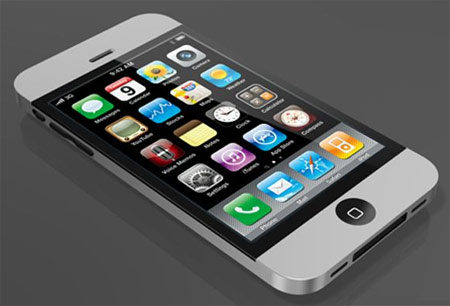

Càng gần đến tháng 9(Thời điểm được cho là điện thoại thế hệ mới của Apple sẽ xuất hiện),càng nhiều đồn đoán về sản phẩm này được lan truyền trên Internet.
Chân dung iphone 5 qua các tin đồn.
Nhiều tin đồn ngày ra mắt
Tuần này,hãng tuyển dụng Gekko (Anh) đã đăng một quảng cáo cho Apple rằng họ "đang tìm kiếm đội ngũ bán hàng Iphone có thể làm việc 5 ngày mỗi tuần,từ thứ 3 đến thứ 7,trong khoảng thời gian từ 16/8 đến 29/10 tại các cửa hàng bán lẻ chủ chốt".
Trang công nghệ CNet cho rằng Apple đang muốn nói ẩn ý về một sản phẩm lớn sắp được trình làng vào giữa tháng 8 và nó hứa hẹn sẽ được tiêu thụ mạnh tới mức họ cần huy động thêm công nhân trong tháng đầu.
Ngược lại,trang tin Trung Quốc Sohu lại làm rối trí người hâm mộ khi nói điện thoại thế hệ mới của apple không thể xuất hiện sớm do chíp lõi kép A5 quá nóng.Rất còn có thể,hãng này sẽ trình làng trước phiên bản giá rẻ Iphone 4S trong mùa thu còn Iphone 5 sẽ đến vào đầu năm sau.
Trước đó,báo Washington Post(Mỹ) cho rằng điện thoại của Apple sẽ được bán ra trong tháng 9.Đây cũng là thời điểm được nhiều trang web cho là chính xác nhất.
Thiết kế Iphone 5
Apple nổi tiếng với những sản phẩm đẹp và kiểu dáng là đặc biệt mọi người quan tâm nhất khi đọc về Iphone 5.Smart phone này được cho là mỏng hơn,nhẹ hơn và dùng vỏ nhôm cũng như không có phím cứng(hoặc ít nhất,nó được trang bị phần mềm để người sử dụng gần như không còn cần dùng đến các phím đó nữa).
Doanh số
Báo Wall Street Journal(Mỹ) trích một nguồn tin nội bộ của Apple rằng hãng này lên kế hoạch đạt được mục tiêu 25 Triệu tiêu thụ Iphone 5 vào cuối năm.Mẻ hàng đầu tiên được sản xuất sẽ khoảng vài triệu máy.
Apple đã bán được 3 Triệu Iphone 4 chỉ trong 3 tuần đầu và trong quý gần nhất,người dùng đã mua tổng cộng 18,65 triệu Iphone tính cả model cũ.
Camera
Iphone 5 có camera mặt sau 8 megapixel,2 đèn Flash LED và camera phía trước cho video chat.Một tin đồn "Điên rồ " khác là Iphone 5 được trang bị camera 3d sau khi Apple đã đăng kí bản quyền tại Mỹ hồi cuối tháng 3 liên quan đến một hệ thống có thể chụp,xử lý và hiển thị các hình ảnh 3D nhờ các thiết bị phần cứng tích hợp camera đôi.